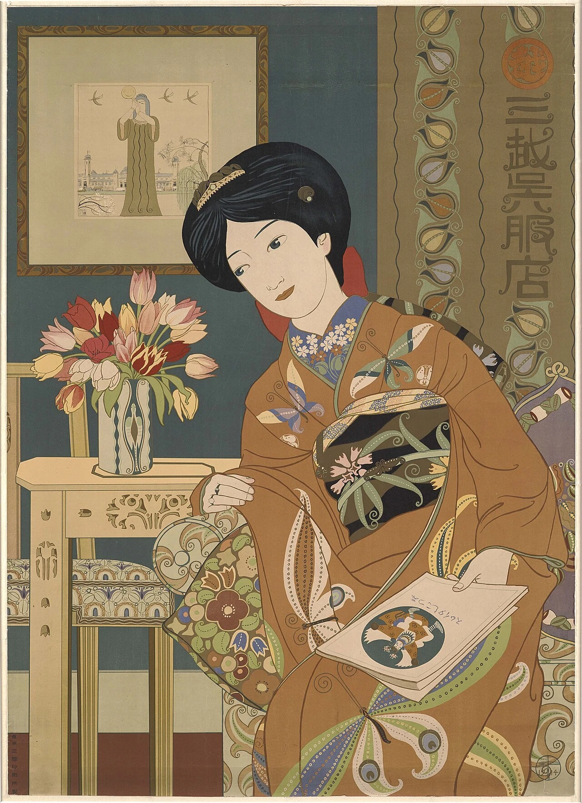
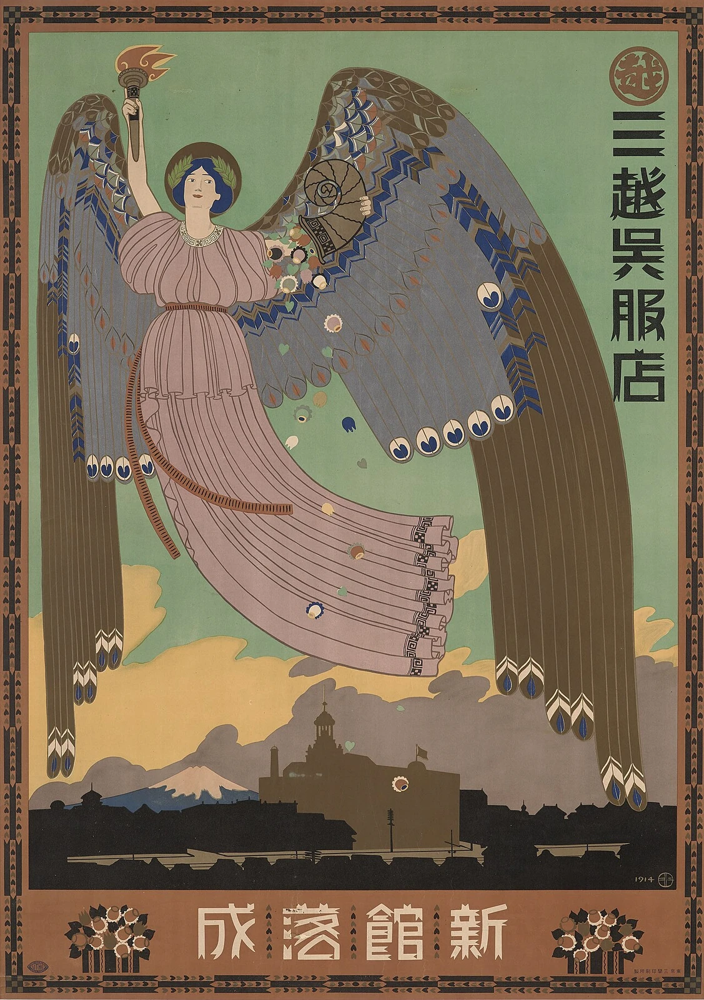
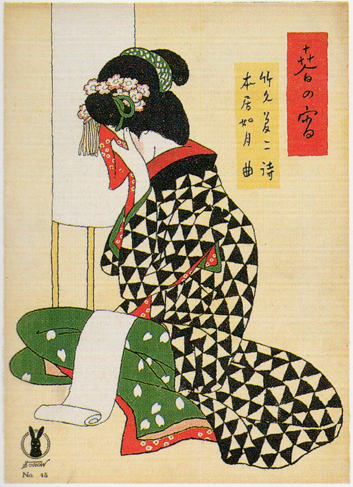
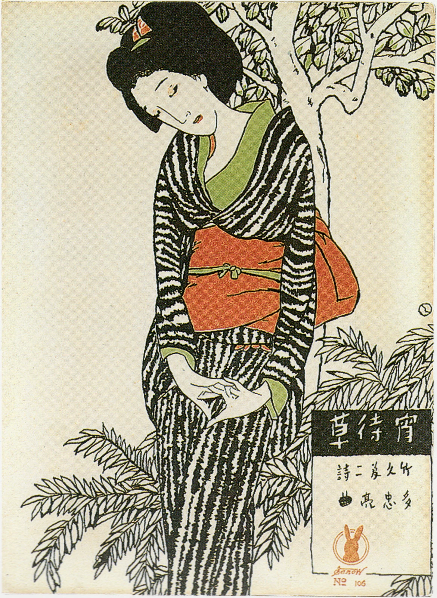
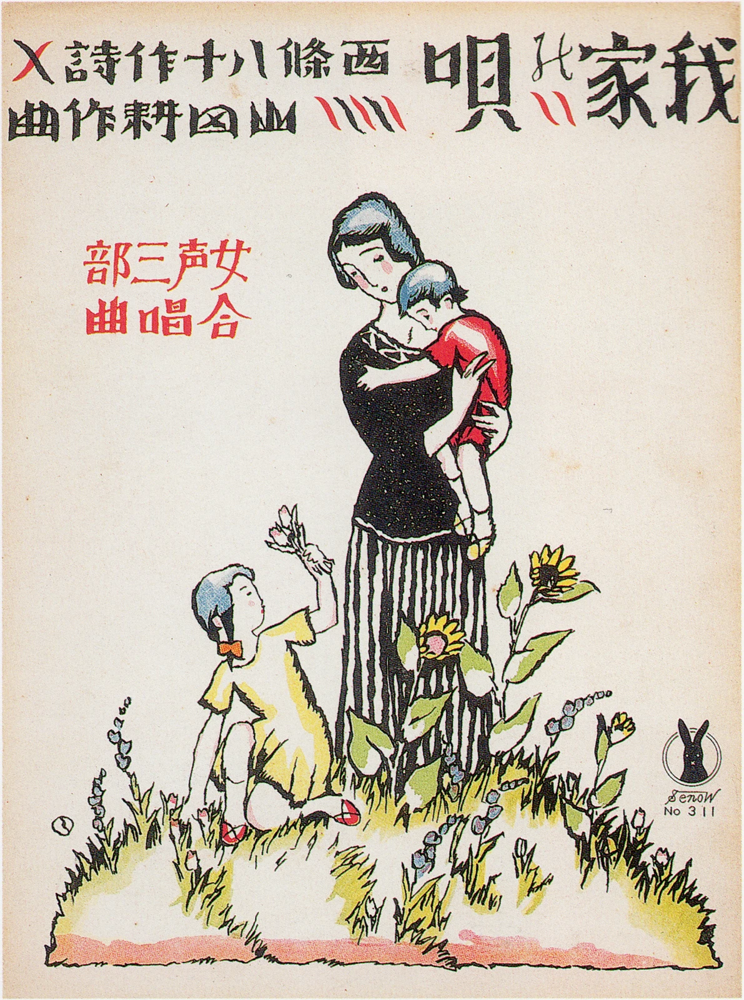

見どころ
着物の女性が座る部屋に、縦書きの店名が収まっています。帯や袖の柄と、花瓶を置いた卓の細い線を見比べると、売りたい反物の柄が画面全体の装飾につながっています。
作品・制作の例8件を紹介しています。実作品画像5点、参照・関連画像0点。画像の収集は継続中です。
日本の伝統と近現代の印刷物を比べる編集上の主題
グラフィックにおける和様
三角や四角だけなのに、人の顔に見える。田中一光（たなか・いっこう）の《日本舞踊》は、日本の舞台の表情を、簡潔な図形で伝えるポスターです。伝統的な題材を、そのまま昔の絵のように描かず、新しい形へ組み直しています。
実作品を見る

画像を表示できませんでした。下の出典ページで確認できます。
杉浦非水 / 1914年
着物の女性が座る部屋に、縦書きの店名が収まっています。帯や袖の柄と、花瓶を置いた卓の細い線を見比べると、売りたい反物の柄が画面全体の装飾につながっています。
杉浦非水／Wikimedia Commons（パブリックドメイン）
出典で作品・資料を見る ↗実作品を見る

画像を表示できませんでした。下の出典ページで確認できます。
杉浦非水 / 1914年
日本橋の新館の上に天使が花をまいています。西洋絵画でおなじみの翼と、日本語の縦書きの店名を、左右の釣り合いを取りながら一枚の開店広告に収めています。
杉浦非水／Wikimedia Commons（パブリックドメイン）
出典で作品・資料を見る ↗実作品を見る

画像を表示できませんでした。下の出典ページで確認できます。
竹久夢二 / 1917年
白と黒の三角模様を服いっぱいに広げ、背を向けた女性の姿を輪郭の内側から浮かび上がらせています。右上に縦書きの題を置いた小さな表紙です。
竹久夢二／Wikimedia Commons（パブリックドメイン）
出典で作品・資料を見る ↗実作品を見る

画像を表示できませんでした。下の出典ページで確認できます。
竹久夢二 / 1924年版
夢二自身が詞を手がけた歌の楽譜です。縞の着物に赤い帯を締めた女性の、伏せた視線と手元に目が向きます。図版は1918年の初版に続く1924年の表紙です。
竹久夢二／Wikimedia Commons（パブリックドメイン）
出典で作品・資料を見る ↗実作品を見る

画像を表示できませんでした。下の出典ページで確認できます。
竹久夢二 / 1926年
子どもが背伸びする姿を母親が見下ろしています。山田耕筰の曲名を右上に大きく置き、着物を描いた別の表紙と同じく、文字の位置と人物の視線で紙面を組み立てています。
竹久夢二／Wikimedia Commons（パブリックドメイン）
出典で作品・資料を見る ↗ポスター
顔を単純な図形へ置き換えたポスターです。舞台の題材と、現代的な構成がどう結びつくかを見る入口になります。
作品・資料の出典を見る ↗作品名（出典表記）：日本舞踊（Nihon Buyo）
田中一光（たなか・いっこう） / 1981年 / ポスター
1989年の再印刷個体とは制作年を分けます。
ポスター
能の公演を知らせる初期の仕事です。後年の舞踊ポスターと比べ、伝統的な舞台を伝える方法の変化を見ます。
作品・資料の出典を見る ↗作品名（出典表記）：第5回産経観世能
田中一光（たなか・いっこう） / 1958年 / ポスター
この作品一つで、すべての活動を代表するわけではありません。
ポスター
浮世絵師・写楽に関する企画のポスターです。昔の図像を、現代の印刷物としてどう見直すかを考えます。
作品・資料の出典を見る ↗作品名（出典表記）：写楽二百年
田中一光（たなか・いっこう） / 1995年 / ポスター
1997年の再制作・再印刷資料と混同せず、1995年の記録を対象とします。
百貨店の広告ポスター
着物の女性が座る部屋に、縦書きの店名が収まっています。帯や袖の柄と、花瓶を置いた卓の細い線を見比べると、売りたい反物の柄が画面全体の装飾につながっています。
作品・資料の出典を見る ↗原題：三越呉服店 春の新柄陳列会
杉浦非水 / 1914年 / 百貨店の広告ポスター
百貨店の広告ポスター
日本橋の新館の上に天使が花をまいています。西洋絵画でおなじみの翼と、日本語の縦書きの店名を、左右の釣り合いを取りながら一枚の開店広告に収めています。
作品・資料の出典を見る ↗原題：三越呉服店 新館落成
杉浦非水 / 1914年 / 百貨店の広告ポスター
楽譜の表紙
白と黒の三角模様を服いっぱいに広げ、背を向けた女性の姿を輪郭の内側から浮かび上がらせています。右上に縦書きの題を置いた小さな表紙です。
作品・資料の出典を見る ↗原題：セノヲ楽譜「春の宵」の表紙
竹久夢二 / 1917年 / 楽譜の表紙
楽譜の表紙
夢二自身が詞を手がけた歌の楽譜です。縞の着物に赤い帯を締めた女性の、伏せた視線と手元に目が向きます。図版は1918年の初版に続く1924年の表紙です。
作品・資料の出典を見る ↗原題：セノヲ楽譜「宵待草」の表紙
竹久夢二 / 1924年版 / 楽譜の表紙
楽譜の表紙
子どもが背伸びする姿を母親が見下ろしています。山田耕筰の曲名を右上に大きく置き、着物を描いた別の表紙と同じく、文字の位置と人物の視線で紙面を組み立てています。
作品・資料の出典を見る ↗原題：セノオ楽譜「我が家の唄」の表紙
竹久夢二 / 1926年 / 楽譜の表紙
ここでいう「和様」は、一つの団体や、決まった時代の美術運動の名前ではありません。日本の文字、舞台、絵画などが、近現代のグラフィックでどう使われたかを比べるための題名です。日本のデザインすべてに共通する特徴がある、と決めつけないことが大切です。
《日本舞踊》では、明るい色と黒い面が顔の各部分をつくります。「日本らしさ」を特定の色だけで説明しません。
漢字や仮名、欧文が何を伝え、どこに置かれているかを見ます。文字も、顔と同じように画面を構成します。
顔を四角や三角に置き換えても、表情が残ります。何を省き、何を残したのかが見どころです。
人物、文字、空白の大きさを比べます。空白は、情報がない無駄な場所ではなく、見る順番に関わります。
「和風の飾りをつけること」と、伝統を読み直して新しく設計することは同じではありません。能、舞踊、浮世絵という異なる題材を、一つずつ確かめます。
少ない形で、何をどこまで伝えられるでしょう。好きな物を三つの図形だけで表すと、残す特徴を選ぶ難しさがわかります。
近代の広告や楽譜の表紙、田中一光のポスターから、日本の絵や文字の形が印刷物の中でどう使われたかをたどります。
作品・制作の例8件を紹介しています。実作品画像5点、参照・関連画像0点。画像の収集は継続中です。